Undergraduate group thesis · Computer Engineering · University of San Carlos, Cebu City
Development of a Framework for a Credit Scoring Platform
Credit Scoring System with Predictive Analysis
A dynamic, model-driven credit scoring platform with configurable predictive analysis. Lenders choose scoring models and assign criterion tiers without changing application code.
- React.js
- Vite
- React Router
- Axios
- Tailwind CSS
- Flowbite React
- Recharts
- Laravel
- REST APIs
- MySQL
- WampServer
- VS Code
- Git
Accepted for internal validation and research. Not a live production deployment.
Details generalised to respect confidentiality with the partner institution.
The problem
The bank assessed loan applicants on paper forms and in Excel. Each application took 45 minutes to 1 hour; results were inconsistent and records were difficult to manage. Four Cebu microfinance firms - Asialink, RAFI, Guilmark and Exquisite Lending, reported slow computation and difficulty storing and retrieving records. All four said they would consider a better system.
The solution
Lenders define their own credit and risk scoring models without code changes. The platform scores borrowers, calculates configurable predictive indicators and preserves records of changes. It supports assessment and review; its indicators are rule-based, not machine learning.
How the scoring works
1. Initial screening
Weighted eligibility criteria cover applicant circumstances, loan context and collateral. A total of 12 points or more passes screening. Proprietary scoring forms and option-level point values are omitted.
2. Credit risk rating
Capacity to pay, character and management, condition, and collateral feed a 100-point rating. The result maps to five credit-risk levels, from Very Low to Very High.
RiskScore = Σ(Wᵢ × Xᵢ)
Wᵢ is a criterion weight; Xᵢ is its assigned score.
3. Dynamic predictive analysis
Repayment Likelihood and Default Probability are calculated from the selected credit/risk model pair and its assigned criterion tiers. Different model configurations can produce different indicators; an application-specific tier override takes priority. The module is configurable and rule-based, not a trained ML model.
Repayment Likelihood
L = (Σ sᵢ·wᵢ) / (Σ max_sᵢ·wᵢ) × 100
Primary 0.50 · Secondary 0.35 · Low 0.15 · None excluded
sᵢ is the criterion score, max_sᵢ its maximum and wᵢ its tier weight.
Default Probability
P_d = (Σ (max_sⱼ − sⱼ)·rwⱼ) / S_rmax × 100
Critical 0.60 · Contingency 0.30 · Behavioral 0.10 · None excluded
The weighted gap to each maximum is normalised by S_rmax, the maximum weighted risk-gap total.
Tiers are configured per credit/risk model pair. A per-application override takes priority over that configuration.
Interface & feature highlights
Explore the application UI
Browse full-frame screenshots with the arrows, keyboard or a horizontal swipe. Each image keeps its original dimensions and proportions; click to open full size. Bank branding is replaced with a neutral label. Screens containing personal data or proprietary scoring values are excluded. Interface values are not additional validation results.
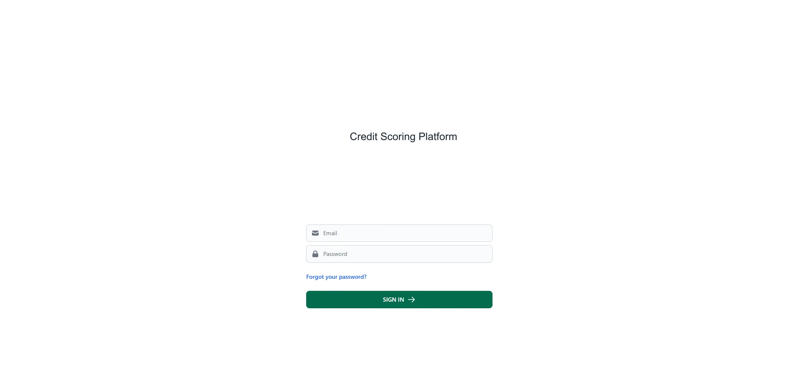
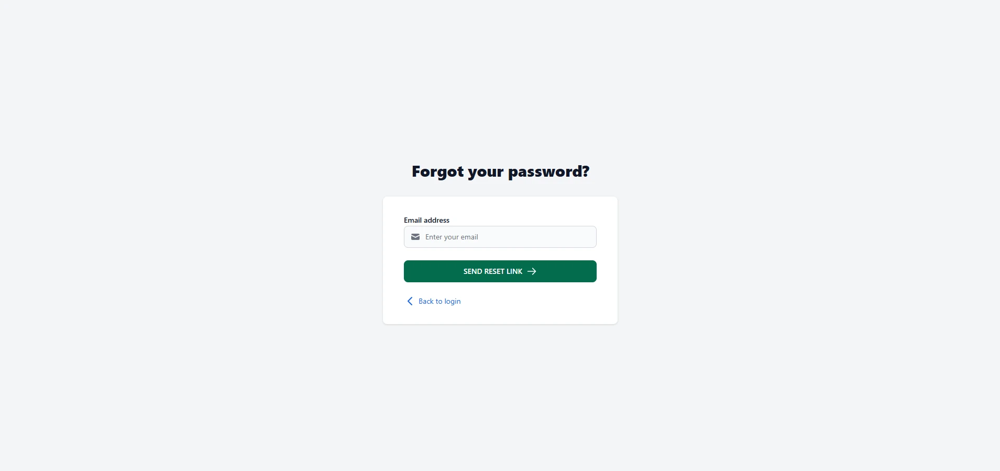
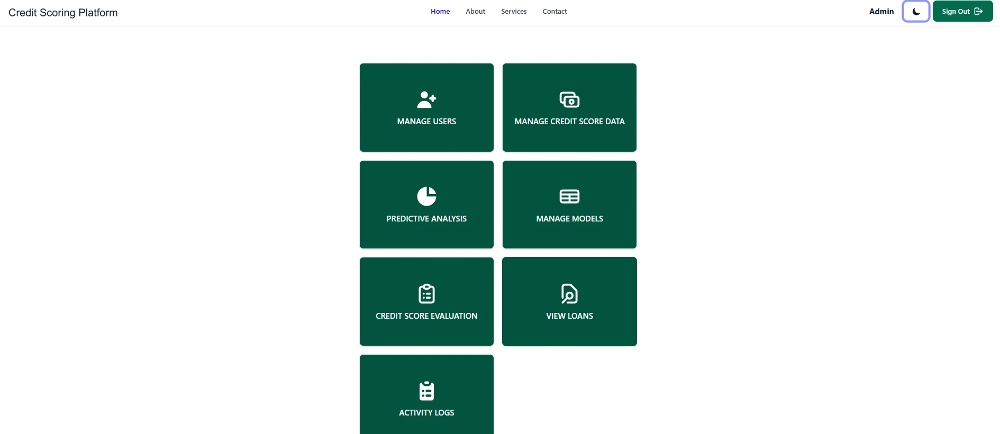
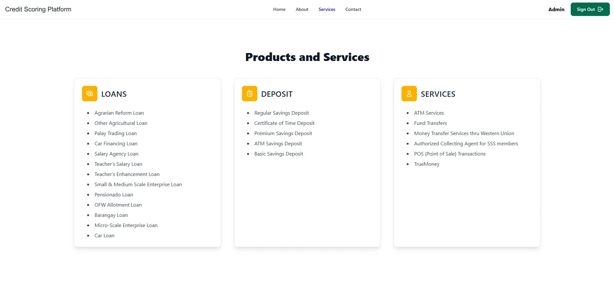
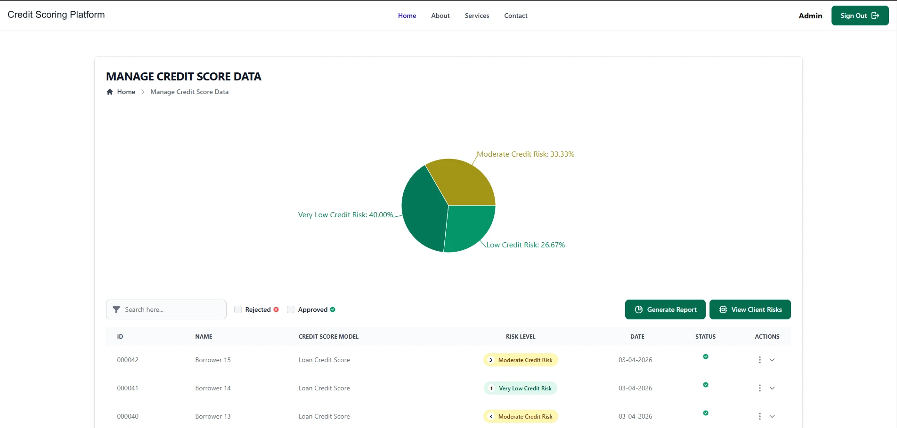
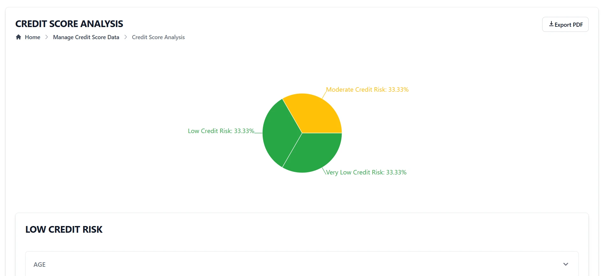
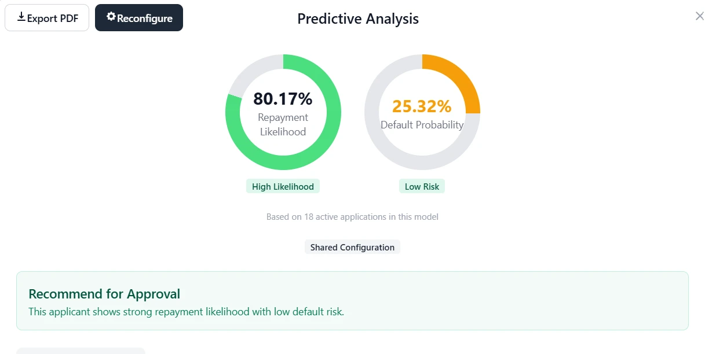
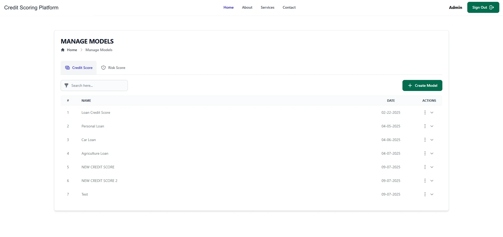
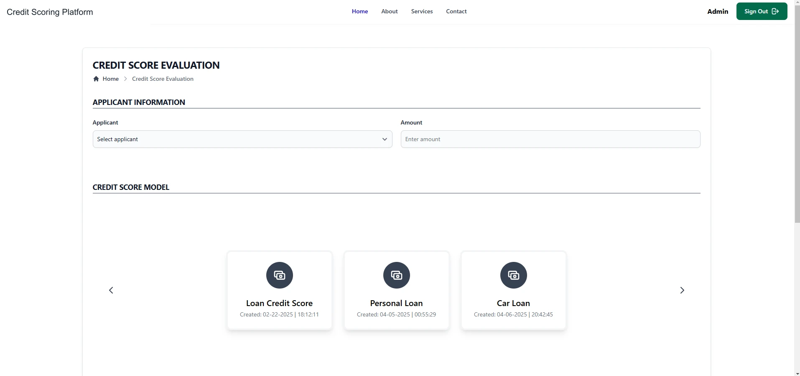
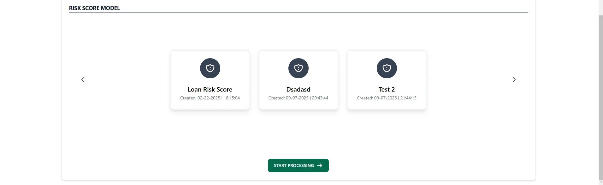
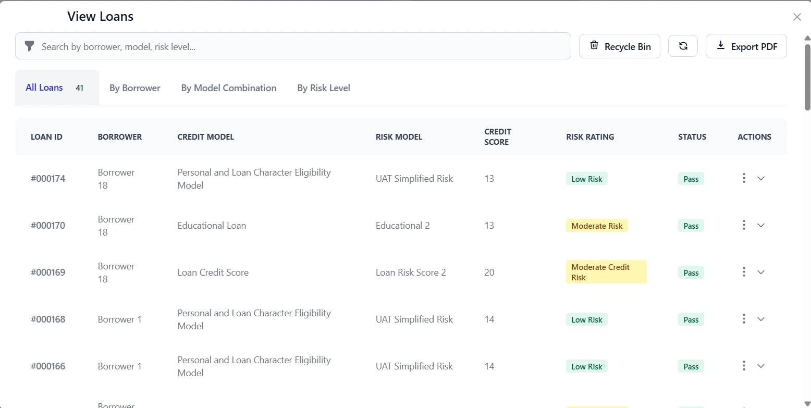
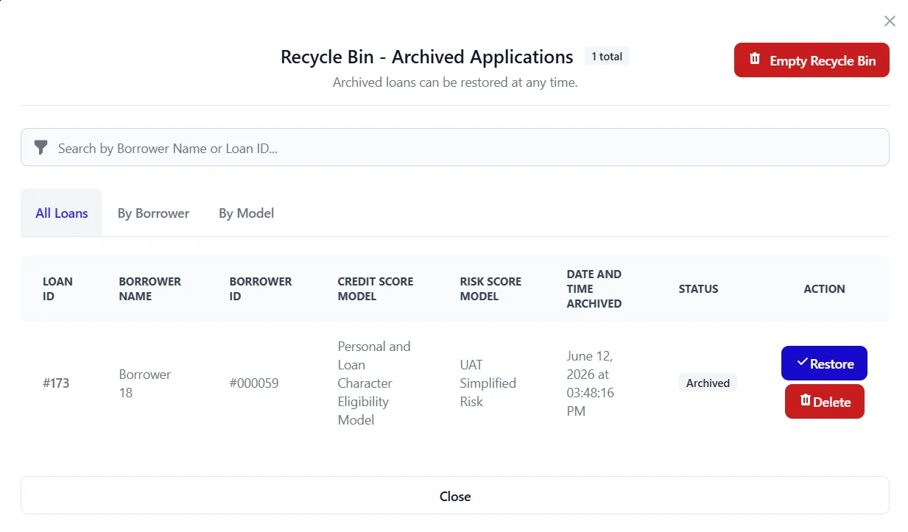
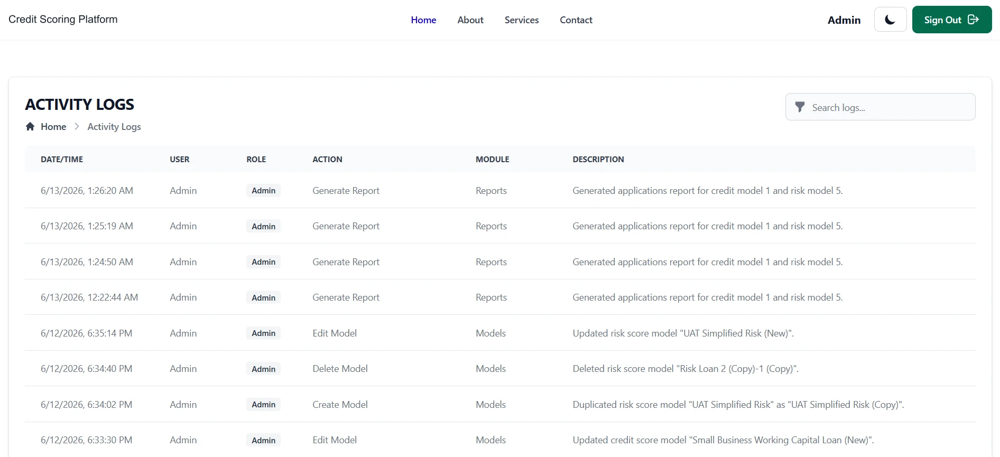
1 / 13 — Login form
Dynamic configuration, explainable output
Administrators assign predictive tiers to criteria for each credit/risk model pair, with None excluding a criterion. Per-application overrides allow a different tier configuration for an individual assessment. Gauges, badges, recommendations and breakdown tables present the resulting calculations.
Breakdowns that expose the calculation
Tables connect each score to its tier, weight and weighted contribution. The illustration below uses symbolic placeholders; the bank's actual scoring tables and criterion point values are not reproduced.
Generalised interface illustration · symbolic placeholders, not borrower data
| Criterion | Score / maximum | Tier / weight | Contribution |
|---|---|---|---|
| Criterion A | s₁ / max_s₁ | Primary · 0.50 | s₁ × 0.50 |
| Criterion B | s₂ / max_s₂ | Secondary · 0.35 | s₂ × 0.35 |
| Criterion C | s₃ / max_s₃ | Low · 0.15 | s₃ × 0.15 |
Models that change without code
Create, edit, duplicate, archive, restore and soft-delete credit and risk models. The interface separates model management from application scoring.
Records that retain their history
Loan edits archive the old record and create a new one. Archive and Recycle Bin workflows support retrieval; activity logs record the user, action, module, old/new values and IP.
Access, reporting and daily use
Role-based, branch-scoped access, dashboard pie charts, PDF report export and dark mode support staff workflows.
Three tiers, separate responsibilities
React SPA
Vite · React Router · Axios · Tailwind CSS · Flowbite React · Recharts
Forms, navigation, visualisations and report interaction.
Laravel REST API
Authentication · validation · computation · logging
Scoring, predictive calculations and application rules.
MySQL
Soft deletes · archiving
Users, borrowers, loan applications, credit score models, risk score models, model combination tiers and activity logs.
Developed on WampServer using VS Code and Git. The frontend, API and database form a decoupled three-tier design.
Validation results
Risk distribution · 15 profiles
- Very Low40% (6)
- Low26.7% (4)
- Moderate33.3% (5)
- High0% (0)
- Very High0% (0)
Validation data: 15 anonymized borrower profiles from the bank.
Risk distribution: 40% Very Low (6), 26.7% Low (4), 33.3% Moderate (5), 0% High or Very High.
Mean Repayment Likelihood: 93.6% (Very Low risk group) vs 73.4% (Moderate group). Default Probability in the Moderate group ran from 25% to 39%.
User acceptance testing: 3 bank staff (president, loans clerk, audit staff), 5-point Likert scale. Means ranged 4.67 to 5.00 across efficiency, ease of use, security, features, predictive analysis and overall potential.
Three UAT rounds plus panel feedback led to the edit/archive features, a corrected default-probability formula, and dynamic tier assignment.
Limitations and next steps
- Rule-based and dependent on administrator-configured weights. No trained ML model or long-term repayment dataset was used.
- Tested on 15 profiles in a rural-bank context; results may not generalise.
- Data sharing between administrators was prepared but not validated and is not presented as a finished feature.
- The bank accepted the deliverables for internal validation and research, not live production deployment or adoption.
Recommended next steps: cloud deployment, ML validation on larger datasets, a borrower portal, 2FA and stronger security, and multi-bank support.
Project context
- Institution
- Computer Engineering, University of San Carlos, Cebu City
- Partner institution
- Rural Bank of Hindang (Leyte), Inc.
Details generalised to respect confidentiality with the partner institution.